This document describes various things you want to understand while in the pursuit of superior font quality in your applications. This is a surprisingly complicated topic which is easy to take for granted when seeing professional font usage in software and television. We will provide a discussion on various topics and then a concluding paragraph discussing strategy. In this document we refer to Font Fusion, which is a third party library that reads TrueType fonts and which is used by EAText for this.
Outline fonts are defined by curves such as Bézier curves and are thus scalable. TrueType and PostScript fonts are examples of outline fonts. An application can load a single outline font and use it to draw text at multiple sizes. You can edit outline fonts with the FontLab commercial tool.
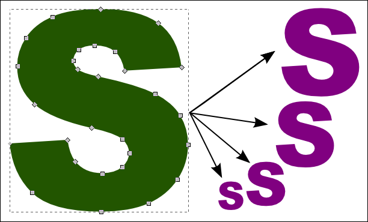
Bitmapped fonts are defined by bitmapped data. Every glyph has a bitmap, and every glyph size requires a unique bitmap. The following picture shows 6X zoomed bitmapped anti-aliased font glyphs at multiple sizes. It turns out that TrueType fonts can have bitmap ("sbit") data embedded in them as an alternative to outline data for small font sizes, though these bitmaps are limited to a single color and no anti-aliasing (smoothing). You can create bitmapped fonts with the EA BitmapFontEditor tool, the EA Mobile Font Editor, as well as the commerical BitFonter tool.
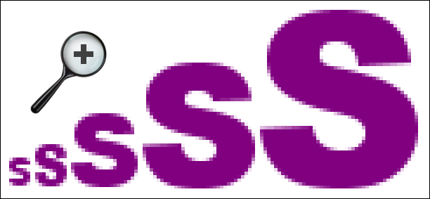
The practical differences between outline and bitmapped fonts are described in the following table:
Outline fonts Bitmap fonts Advantages • Many pre-existing fonts to choose from.
• Face data has a low memory footprint.
• Can support just about any script (writing system), including complex scripts.• Can be multi-colored; it is not limited to being monochromatic.
• Can look good at any size.
• Doesn't require complex code to interpret and render.Disadvantages • Hard to look good at small sizes; few commercial fonts look good at small sizes.
• Limited to being monochromatic.
• Hard to use in large sizes due ot the memory consumption.
• Requires complex code to interpret and render, though usually that is provided by a third party.• Almost impossible to use in large sizes due to the memory consumption.
•Difficult to support complex scripts (writing system).
• There is no accepted standard file format and virtually no commerical sources.
Much of the rest of this document will be about the advantages and disadvantages listed in the above table.
Anti-aliasing (also known as font smoothign) allows font edges to be smoother, and is useful for making small sized fonts (< 15 pixels) look good. There is a lot of discussion in this document about anti-aliasing, so we don't have much to say here other than to present an additional picture comparing large sized text with and without anti-aliasing:
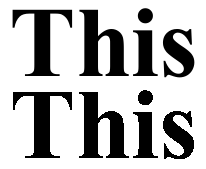
See the Sub-pixel Antialiasing document for more info about EAText sub-pixel anti-aliasing support and usage.
ClearType is the name of a Microsoft technology used to improve the appearance of text drawn on LCD displays. Microsoft didn't invent ClearType, as the same kind of technique was in fact employed years earlier. ClearType is otherwise called LCD anti-aliasing or sub-pixel anti-aliasing, as ClearType is a Microsoft trademark. ClearType anti-aliasing can be applied to outline or bitmap fonts.
ClearType is a form of anti-aliasing that works at the sub-pixel level. It works by using the individual red, green, and blue components of an LCD screen pixel as if they were independent pixels. Consider that an LCD screen when viewed very magnified looks somewhat like this:
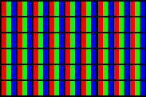
When glyphs are drawn with ClearType, they are drawn with variable amounts of coloring in each pixel component:
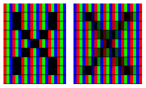
The following demonstrates size 14 Arial drawn with ClearType, with regular anti-aliasing, and without anti-aliasing. On most LCD monitors the top row (ClearType) will look the smoothest, but it may also show coloring around the edges of the glyphs. The larger the text, the less it needs ClearType, and very large text (>= size 80) may not need any anti-aliasing at all.
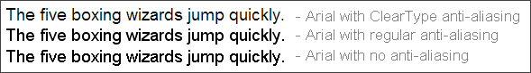
The picture below consists of the same text drawn at Arial size 9. The top row is the smoothest of the three and is evenly weighted, but it clearly shows a discoloring that makes it look like the text is not black. The second row is fairly smooth but demonstrates how anti-aliasing has problems with very small text, as the font size is too small for anti-aliasing to look good with some of the letters (e.g. w, s, k). The third row looks very crisp, though slightly blocky. The reason it looks so crisp is that this font (Microsoft Arial) has extensive hinting (desribed in the next section) built into it. The bottom row has no no anti-aliasing nor hinting and looks the worst. It is unacceptable for commercial applications and demonstrates why hinting is so important for smaller sized fonts.
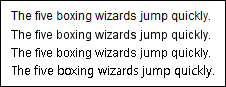 ClearType Anti-Aliasing Hinting No hinting or anti-aliasing
Hinting is an important concept for screen fonts or any fonts displayed at small sizes. In the words of Will Harris:
At its most basic level hinting (or, more accurately, instructing) a font is a method of defining exactly which pixels are turned on in order to create the best possible character bitmap shape at small sizes and low resolutions. Hints are necessary because the numbers of pixels (dots on screen) available to display a font at small sizes is so small that one pixel on or off can totally change the way a letter displays. A curve can become a blob. The stem of one letter may appear two pixels wide while another is only one pixel wide, causing words to look extremely uneven.
Here's an example of the Verdana font (which in fact was hinted by Will Harris of the aforementioned paragraph) with hinting and without it:
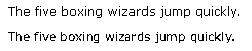
Hinting isn't mutually exclusive with anti-aliasing -- you can have a font rendered with both techniques active. Hinting results in balanced crisp fonts that have hard edges. Anti-aliasing results in balanced soft fonts that have smooth edges. Choose whichever works best for your application.
GASP (Grid-fitting and Scan-conversion Procedure) refers to information stored in a TrueType font which identifies which font sizes are best for applying hinting and anti-aliasing. A very large font (>= 64 pixels) generally doesn't need to have hinting applied. On the other hand, a small font (~10 pixels) almost always needs hinting in order to look good. TrueType fonts often have a gasp table, which simply says what sizes the font author thinks should have hinting and anti-aliasing applied. The gasp information itself provides no hinting or anti-aliasing functionality. It's probably best if you ignore GASP information and let your artist decide for herself what looks best.
The process of adding hints to a font is generally outside the expertise of most users and in any case is a laborious process that could take several man-months of work for just a single typeface.
You can read more about hinting at http://www.microsoft.com/typography/TrueTypeHintingWhat.mspx.
Let's cut to the chase: TrueType is superior to PostScript in terms of rendering quality on computer screens. There are sometimes arguments made by PostScript fans to the contrary, but such arguments are misinformed. If TrueType isn't superior in theory (in general it is), then it's superior in practice. The primary reason TrueType fonts are better is that the TrueType font format is designed for usage by fonts, whereas the PostScript font format is mostly a generic extension of the PostScript page description language. In particular, TrueType has a fairly powerful language for specifying how to draw fonts at small sizes, whereas PostScript has very little in these respects. PostScript fonts are fine for large artwork and work well when paired with PostScript printers, but that doesn't help screen-based graphical applications very much.
There is another type of outline font called OpenType (.otf). Internally, however, .otf fonts may either be like TrueType (.ttf) fonts or like PostScript (.pfb) fonts. Unfortunately, you can't easily tell by looking at the name or some sample glyphs.
The large majority of the time, you will want to use TrueType fonts in your application instead of PostScript fonts. But there are always exceptions.
There are numerous font vendors as well as freeware fonts and font makers for hire.
There are dozens of commercial font vendors. The best known vendors include Ascender (Microsoft), Linotype, Bistream, Agfa, Monotype, and Adobe. An important thing to realize is that most font vendors don't provide screen fonts (fonts with hinting for small sizes). As described in our section on hinting, unhinted fonts look bad at smaller sizes and this badness may or may not be salvaged by using anti-aliasing. Ascender and Linotype have numerous screen fonts, and for a fee they can add screen hinting to an existing unhinted font that they provide. Another issue with commercial fonts is that they usually don't support languages beyond EFIGS (English, French, ...) and you will be stuck finding a way to modify these fonts for usage by localized applications. Ascender provides the best localized fonts, whereas Monotype an Adobe provide the worst. Another strike against Adobe is that their TrueType fonts are not native TrueType fonts but instead of PostScript fonts that have undergone a crude conversion process with the result that Adobe TrueType fonts have some of the poorest quality of commercially available fonts.
There are thousands of freeware and shareware fonts, and some of them are pretty good for commercial art purposes (as evidenced by their usage in commerical artwork). However, almost no freeware fonts have screen hinting and thus they look poor at small sizes. They also tend to have small character sets and rarely go beyond Western languages. If you want to use one of these fonts, you'll need to be aware of the licensing terms and may find yourself manually augmenting the font to include all the characters you need.
You can also hire a font designer to build a font for you. Some of these designers produce fairly good work and can produce all the characters you need. The cost of a custom designed font (which you own for all uses) isn't much more than the cost of licensing fonts for one-time usage from commercial font vendors. Once again there is the problem of small sizes and screen hinting. Most custom font designers are not experts at hinting TrueType fonts, and even those that are will charge a lot of money because the process of hinting a font is painstaking.
Font Fusion is a commercial package which reads outline fonts (e.g. TrueType fonts) and can convert them into bitmaps for use by EAText. Font Fusion is licensed by Electronic Arts for usage in its game applications and tools. An alternative to Font Fusion is FreeType (http://www.freetype.org/), which is an open source library which is very commonly used (including by Linux operating system distributions). On commercial desktop platforms such as Windows and Macintosh, the operating system provides its own outline font renderer which is available to running applications. We will summarize these font rasterizers with a table:
Font Fusion FreeType Windows Macintosh Advantages • Highest performance.
• Provides optimized support for Asian fonts .
• Avoids concerns about font-related patents issues.
• Supports various font formats.
• Portable to all significant platforms.• Good performance.
• Free.
• Has ClearType-like functionality.
• Supports many font formats.
• Has good rendering quality.
• Portable to all significant platforms.• Most compatible with existing fonts.
• Has good rendering quality.
• Has a lot of auxiliary functionality.• Has a good API for working with fonts and type in general.
• Has a lot of auxiliary functionality.Disadvantages • Lowest quality rendering.
• Doesn't support ClearType-like rendering as of 6/2007 (despite its claims that it does).
• Most expensive option.• There are potential concerns about font-related patents and open source intellectual property issues.
• There is little technical support, since it is open source.• Low performance compared to alternatives
• Not available on other platforms.
• Supports only TrueType and PostScript fonts.
• API is a bit quirky.• Rendering quality is not as good as Windows, though this is a frequent topic of debate.
• Not available on other platforms.
• Doesn't support ClearType-like rendering.
Electronic Arts currently licenses Font Fusion for use in game applications. Font Fusion is mostly a good choice; it's biggest weakness is that it lacks rendering quality in some cases, especially with respect to rendering small sized hinted fonts. You will have to simply try your fonts with it to see how they work.
EAText GlyphCache textures can be in the form of ARGB or DXT3 encoding. The latter compresses the data 4:1 relative to ARGB, but the compression is lossy. For monochromatic fonts the loss is practically imperceptible, while for highly colored bitmapped fonts the loss can indeed be perceptible, depending on the colors and patterns involved.
Here we have a picture of a monochromatic font texture as it is in ARGB on the left and DXT3 on the right. The differences are negligible.
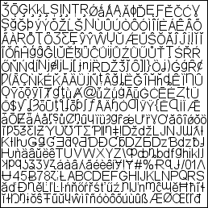 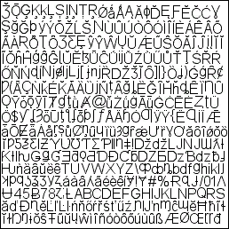
Here we have a picture of a bitmap font texture as it is in ARGB on the left and DXT3 on the right. The compression loss evident in the DXT3 version makes it unacceptable for use.
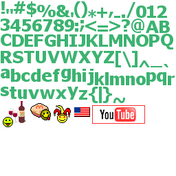
Italic fonts, oblique fonts, and decorative fonts generally render worse than standard fonts at smaller sizes. You will likely find that you need to use larger font sizes and/or use anti-aliasing in order to the glyphs to look acceptable. The following demonstrates how a decorative font (Kuenstler Script) looks with anti-aliasing enabled and disabled.
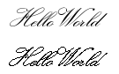
The main point being made here is to watch out for the usage of these kinds of fonts in the small sizes typically used in software application interfaces.
Non-Western scripts (writing systems) often use glyphs that have more visual detail than found in Western scripts such as Latin (English, French, etc.). If you are going to localize your application to an Eastern or Middle-Eastern locale, you may find that the fonts and font sizes you used for your Western locales is too small. For example, there are many English typefaces that are readable at sizes below 12 pixels, but such sizes are difficult or impossible to read with Japanse Kanji.
Instead of trying to describe the situation with text, we will instead provide samples of text in various scripts rendered by the same font (Arial Unicode MS, 12 pixel). While you are looking at this text, consider that your system may be configured to use no anti-aliasing, anti-aliasing, or ClearType anti-aliasing. You should notice that while the simple scripts are fairly easy to read at this size, some of the others are not.
Script Languages Example text Latin English, French, Italian, etc. The quick brown fox jumps over the lazy dog. Greek Greek Κοινό ομολογιακό δάνειο ύψους 7 εκ. ευρώ για τη Πετζετάκις Hungarian Hungarian A fele ezért szereti, a fele ezért gyűlöli.
Hebrew Hebrew במשך שעות ארוכות שכבו חמישה מטיילים צעירים בג'יפ מרוסק Devanagari Hindi न्यायाधीन ने आरोप तय करने का बाद कहा है कि वो अभियुक्तों Arabic Arabic المساكن في مبنيين بمدينة الخليل في الضفة الغربية Hangul Korean 김영대부위원장이 윁남조선친선협회대표단을 만났다 Han Chinese, Japanese 水產品禁銷中 印尼疑遭報復湯哥湯嫂 也想拍艷照 Thai Thai รวบหนุ่มนักแชต ลวงหญิงไปหลับนอน ก่อนขโมยของหนี Hiragana Japanese いろはにほへとちりぬるをあさきゆめみし Katakana Japanese オペレーティング・システムインターネット
Due to the large number of characters in Chinese, Japanese, and Korean, it is not possible to make a bitmapped font for these languages without it looking fairly ugly. Your best bet is to use a TrueType font (or possibly one of Bitstream's stroke fonts if you have little RAM) and enable some form of anti-aliasing. Also, a font size of 16 or greater allows for much more readable Asian characters.
Two common font effects used in software are shadows and outlines.
The question of how to draw shadowed text may be the most oft-asked question about EAText. There are basically two solutions:
The problem with kEffectShadow is that it produces inferior shadows and in fact in some cases can produce drawing errors when a shadow of one glyphs draws over the body of another glyph. This error is most often seen when drawing non-Western text or when drawing Western text that is very tightly spaced. The bigger/fuzzier the shadow, the more likely this error. But bigger/fuzzier shadows are key to making pleasant looking shadows.
Drawing the text in two (or more) passes results in much nicer looking shadows and avoids the aforementioned overlap errors. The problem with it is that it requires multiple drawing passes. At the very least, you need two passes: one for a shadow and one for the glyphs. But how do you make a fuzzy shadow? You can either draw glyphs multiple times with offset and alpha, or you can come up with a GPU shader program that implements this (usually via multi-sampling as it draws). The EATextRNA package demo provides an example of the former solution. The latter solution turns out to be less easy than it might seem due to the way pixel programs work, but there is probably a viable means of doing this. Another method of drawing shadows is to simply use a bitmapped font of shadows.
In any case, there is no single simple solution to solving this problem properly, as should be obvious from the kEffectShadow discussion above.
Outlined text has issues similar to shadowed text (discussed above). However, if text outline thickness is less than two or three pixels you successfully implement outlined text via a single pass. The kEffectOutline style from EATextStyle implements the automatic outlining of glyphs from TrueType font files. This results in mediocre quality, whereas a bitmapped font generated by Photoshop results in better quality. As with shadowed text, you can implement outlined text via a multi-pass technique. An basic example of this multi-pass technique is shown in the image at the top of this file.
CRT (cathode ray tube) monitors are quickly becoming a thing of the past. These monitors are rarely found with desktop computers any more, and CRT televisions are hardly sold any more in the United States. Newer tech such as LCD and Plasma screens is taking over and now commands 90% of the new television market. The result of this is that you can probably assume that PC video games will be using LCD monitors and that console video games sold in the United States after about 2008 will be using LCD monitors. Outside the United States the console gaming market is a little different and families will more often use old hand-me-down TVs for their children's gaming consoles. So outside the United States you might not be able to rely on LCD monitors will the year 2010 or so.
LCD monitors are sharper than CRT monitors and often provide HD (high definition) as well. On top of that, LCD monitors provide the ability for resolution enhancing technologies such as ClearType. The result of all this is that games that can assume they will be used on an LCD monitor can get away with using significantly smaller text sizes and will have higher quality text at larger text sizes. Sure, all graphics are improved by higher resolution, but text graphics in particular benefit from LCD monitors due to the sharp edges of text.
EATextViewer is a tool which allows for testing and viewing fonts rendered by EATextViewer. It makes the process of testing font quality and options much quicker, though you will want to test your fonts in your application on its target hardware as well. EATextViewer is distributed as a Windows application but in fact it can be built to run on the XBox 360 and PS3 platforms as well. The picture below gives a sense of its feature set. You can download it from the EA Package Server at http://packages.eac.ad.ea.com/package.aspx?id=760
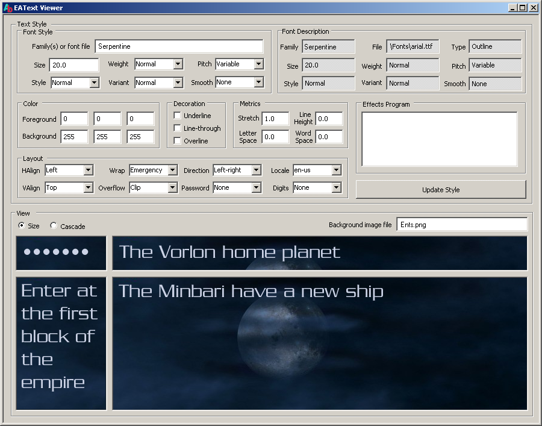
End of document